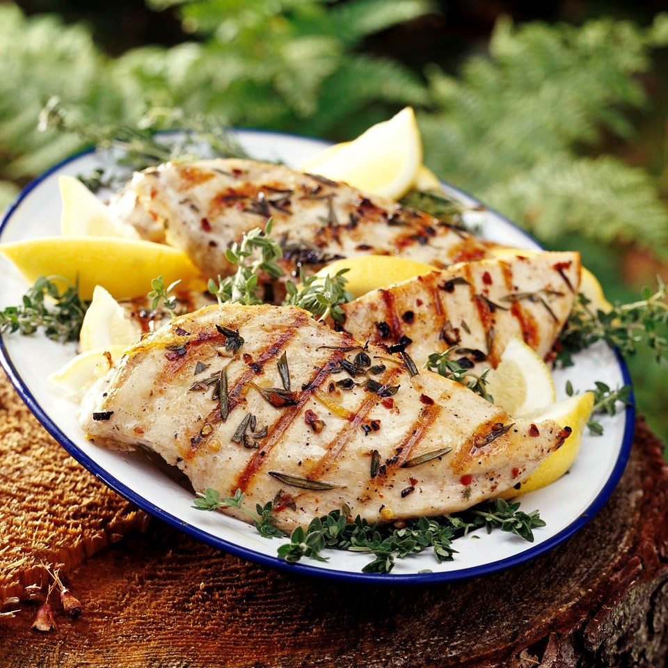

Grilled Lemon Herb Chicken

Description
This grilled lemon herb chicken is juicy, flavorful, and perfect for a summer barbecue. The marinade of lemon, garlic, and herbs infuses the chicken with delicious taste and aroma.
Ingredients
- 4 boneless, skinless chicken breasts
- 3 tbsp olive oil
- Zest and juice of 1 lemon
- 2 cloves garlic, minced
- 1 tsp dried thyme
- 1 tsp dried rosemary
- Salt and pepper to taste
- Fresh herbs (such as parsley or basil), chopped for garnish
Steps
- In a bowl, whisk together olive oil, lemon zest, lemon juice, minced garlic, dried thyme, dried rosemary, salt, and pepper.
- Place chicken breasts in a shallow dish or resealable plastic bag. Pour the marinade over the chicken, turning to coat evenly. Cover (or seal the bag) and refrigerate for at least 1 hour, preferably longer (up to overnight).
- Preheat grill to medium-high heat.
- Remove chicken from marinade and grill for 6-7 minutes per side, or until fully cooked through (internal temperature of 165°F or 74°C).
- Remove from grill and let rest for a few minutes before serving.
- Garnish with chopped fresh herbs and serve hot.
Go back to the homepage